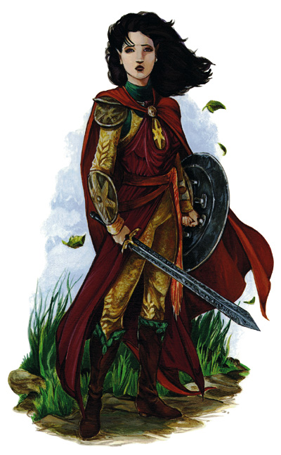

阿尔瀚娜·星光（Alhana Starbreeze）
女性西瓦纳斯提精灵，贵族4级/战士7级
中型类人生物（精灵）
挑战等级：11
生命骰数：4d8+8+7d10+14（82）
先攻权加值：+1
速度：30尺
防护等级：22（接触11，措手不及21）
攻击：+13/+8（近战，1d8+4/17-20，长剑+2）或者+12/+7（远程，1d6+1/×3，短弓+1）
特殊属性：额外职业技能（驯养动物），协作+1，精灵视觉，请求+2，鼓舞每日1次，西瓦纳斯提精灵特性
阵营：中立善良
豁免：坚韧+8，反射+7，意志+6
属性：力量10，敏捷13，体质15，智力16，感知11，魅力16
身高：5英尺1英寸
技能：估价+7，唬骗+8，攀爬+7，交涉+15，收集情报+7，驯养动物+11，威吓+9，跳跃+7，知识（神秘）+4，知识（贵族）+7，聆听+6，骑乘+11，搜索+7，观言察色+6，手技+3，法术辨识+4，侦察+4，野外生存+2，游泳+6，翻滚+3
专长：寓守于攻，精通重击（长剑），领导，近程射击，快速射击，技能专攻（交涉），武器专攻（长剑），武器专精（长剑）
协作：贵族善于与人们协作，当角色对他人进行帮助或指导时，成功的帮助检定可以使目标获得+3的检定奖励，而非通常的+2。角色不能在战斗中使用本技能。
请求：每周三次，贵族可以向自己所熟悉的对象请求帮助，每次请求的对象必须不同。想要使用本技能，角色必须首先进行请求检定（1d20+2），检定难度由请求的具体内容决定。举手之劳的检定DC大致为10，而高危险，高花费，或是违法行动的DC 则高达25。角色不能在请求检定中取10或取20。本技能不能重试。
鼓舞：贵族可以使用语言鼓舞自己的队友（但不包括角色本人），使他们在战斗中发挥更强大的力量。角色每次可以同时鼓舞两名队友，目标必须能在一整轮内观看并聆听角色的演说，被鼓舞后的队友在攻击骰和伤害骰上获得+1的士气加值，并在豁免骰上获得+2的士气加值，本效果持续5轮。
西瓦纳斯提精灵特性（EX）：角色对睡眠效果免疫，在对抗附魔系法术时获得+2的豁免奖励，在进行神秘知识检定以及法术辨识检定时获得+1的种族奖励，在进行聆听检定，搜索检定以及侦察检定时获得+2的种族奖励。
个人财产：精灵锁甲+3，轻型钢盾+2，长剑+2，短弓+1
长枪战争前，阿尔瀚娜·星光，星辰咏者罗拉克的女儿，是许多西瓦纳斯提精灵的缩影：冷淡，傲慢，对大灾变中精灵应负的责任漠不关心。长枪战争改变了这一切，邪恶的力量开始进攻西瓦纳斯提，咏者束手无策。为了自己的家乡，阿尔瀚娜依照父亲的命令，负责疏散西瓦纳斯提精灵，领导他们乘船经由危险的海路前往南亚苟斯。
在圣奎斯特岛，阿尔瀚娜代表西瓦纳斯提精灵与索兰尼亚骑士展开谈判。其间由于罗拉克噩梦的传闻，她将谈判工作交给其他贵族，孤身一人返回故乡。在西瓦纳斯提，等待阿尔瀚娜的是扭曲变形的森林，于是她转向临近的塔西斯城请求帮助，并结识了坦尼斯和其他长枪英雄。在龙人大军攻陷城市的混乱中，阿尔瀚娜爱上了史东·布莱特布雷德，并把自己的星钻交给了这位年轻的人类。
在坦尼斯和其他几位长枪英雄的帮助下，阿尔瀚娜成功地穿越噩梦般的森林到达西瓦诺斯，并将自己的父亲从龙珠中拯救出来。送走长枪英雄后，阿尔瀚娜继续留在西瓦纳斯提埋葬自己的父亲，并期待与爱人的重逢。但从星钻中传来的，却是一股令人心碎的寒意。
长枪战争后，阿尔瀚娜女王变得更为开明。她与奎灵纳斯提王子波修士的政治婚姻，给精灵大联合带来了一线曙光。波修士与妻子一起为了重建西瓦纳斯提森林而努力，并在长久的生活中逐渐产生了感情。混沌战争前不久，阿尔瀚娜怀孕，但西瓦纳斯提和奎灵纳斯提的保守贵族却千方百计阻止两国的联合，并在不久后囚禁并放逐了波修士夫妇，使他们成为了黯精灵。
阿尔瀚娜在索拉斯的最后的归宿旅店中产下西瓦诺诗（Sivanoshei）。由于波修士一直试图从自己的外甥，“傀儡国王”吉尔赛斯手中夺回王位，夫妇两人居无定所，一直过着简朴的生活。
混沌战争后，阿尔瀚娜认为丈夫已经死亡。由于奎灵纳斯提处在吉尔赛斯的统治下，阿尔瀚娜开始逐渐从柯南将军（General Konnal）手中收回西瓦纳斯提，并试图将西瓦诺诗教育成一名好国王。同时，阿尔瀚娜也想方设法试图穿透西瓦纳斯提绝对领域（Silvanesti’s Shield），这股神秘的力量阻止一切生命进入森林。